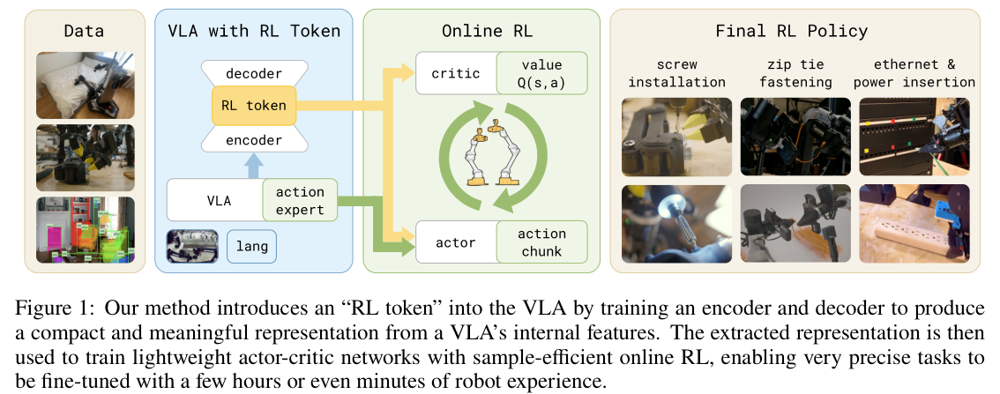
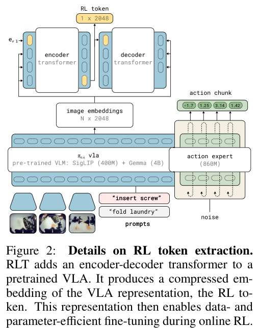
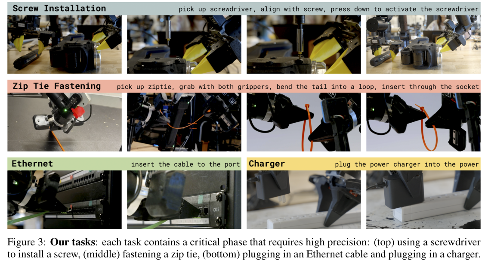
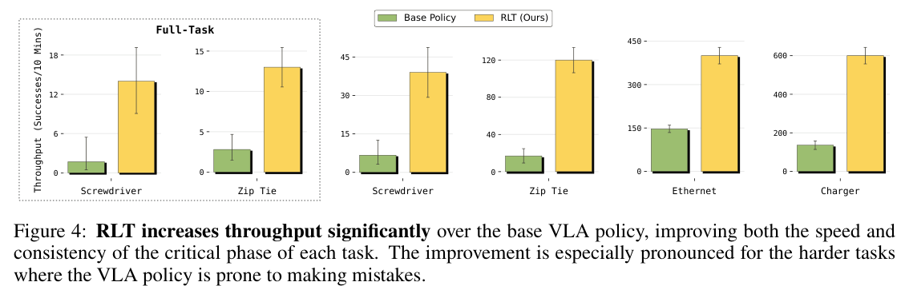
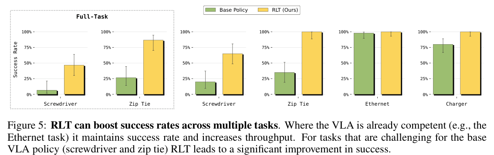
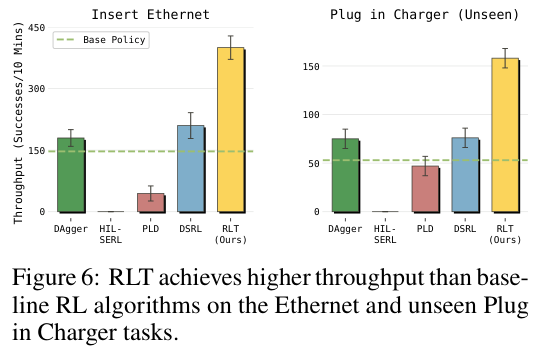
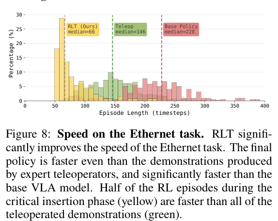

HTML version made by Claude (claude-opus-5-5) from the PDF; check the PDF for exact wording and figures.
Charles Xu1, 2, † Jost Tobias Springenberg1 Michael Equi1 Ali Amin1 Adnan Esmail1 Sergey Levine1, 2 Liyiming Ke1
https://www.pi.website/research/rlt

Abstract: Vision-language-action (VLA) models can learn to perform diverse manipulation skills “out of the box,” but achieving the precision and speed real-world tasks demand requires further fine-tuning with reinforcement learning (RL). We introduce a lightweight method that enables sample-efficient online RL fine-tuning of pretrained VLAs using just a few hours of real-world practice. We (1) adapt the VLA to expose an “RL token,” a compact readout representation that preserves task-relevant pretrained knowledge while serving as an efficient interface for online RL, and (2) train a small actor-critic head on this RL token to refine the actions, while anchoring the learned policy to the VLA. Online RL with the RL token (RLT) makes it possible to fine-tune even large VLAs with RL quickly and efficiently. Across four real-robot tasks that demand millimeter-level precision, RLT improves the speed on the hardest part of the task by up to 3× and raises success rates significantly within minutes to a few hours of practice. It can even surpass human teleoperation speed on some of the tasks.
General-purpose vision-language-action (VLA) models can learn a wide range of diverse manipulation skills from data. Yet they often struggle in the last millimeter of execution: motions can be slow, successful completion may require pauses and retries, and small errors at critical stages of precise tasks can compound into failure. A natural way to address this challenge is to fine-tune VLAs with reinforcement learning (RL). By practicing on the target task, RL can improve precisely the stages of the task that are most critical for success, which are often the stages most sensitive to small errors and the hardest to cover reliably with demonstrations. But real-world robotics operates under a tight budget: every episode costs time, every failure consumes effort and wear, and adaptation often has to fit within a few hours of practice.
Sample-efficient fine-tuning of VLAs, however, presents major challenges. Conventional RL for foundation models [1, 2, 3] relies on large-scale data and can be inefficient for rapid online adaptation, while data-efficient real-world RL [4, 5] trains much smaller models that sacrifice the VLA’s generalization. The central question, then, is how to leverage the VLA’s generalization while achieving the speed and sample efficiency of lightweight online RL.
We introduce a practical recipe that bootstraps fast online reinforcement learning with representations obtained from a pretrained VLA policy. Our key idea is to adapt the VLA to expose a compact interface for sample-efficient online RL. We achieve this by training the VLA to expose an RL token, a compressed representation that makes task-relevant pretrained knowledge accessible to a lightweight online RL policy. Running RL with this RL token (RLT) creates a simple division of labor: the frozen VLA provides broad perceptual understanding and action recommendations, while the lightweight actor and critic adapt the policy to succeed at the hardest parts of a task online. To make this practical in the sample-efficient real-world regime, our method uses a sample-efficient online RL algorithm to train the small actor and critic networks that use the RL token representation, with a regularizer anchoring the actor to the VLA so that online RL refines promising behaviors rather than learning from scratch. RLT operates over chunked actions aligned with the VLA’s native action interface, shortening the effective decision horizon for temporal-difference learning under sparse rewards at high control frequencies.
We evaluate RLT on four challenging robot manipulation tasks that can require millimeter or sub-millimeter precision: screw installation, zip tie fastening, Ethernet, and charger insertion. Across these tasks, RLT improves both success rate and execution speed within a few hours of online training. The largest gains appear in the critical phases of the tasks where RLT speeds up execution by up to 3× and substantially improves success rates, for example from 20% to 65% for a challenging screw-insertion task. On one of the most dexterous parts of our tasks, policies trained with our method can surpass expert teleoperation speed while maintaining reliability. These results suggest that combining a VLA model with lightweight online RL offers a practical path to high-performance manipulation without extensive task-specific engineering.
† Work done during internship at Physical Intelligence. 1. Physical Intelligence, 2. UC Berkeley
10th Conference on Robot Learning (CoRL 2026), Austin TX, USA.
Vision-language-action models. Behavioral cloning from large demonstration datasets has recently emerged as the dominant paradigm for training generalist robot manipulation policies (see e.g. [6, 7, 8, 9, 10, 11]). Key ingredients are action chunking [12] and expressive action distributions such as [13] or autoregressive generation [6]. A further advancement came from using large pretrained vision-language models as a backbone for language-conditioned generalist policies, yielding vision-language-action (VLA) models [6, 7]. Recent work has combined VLA backbones with chunked action generation and expressive policy parametrization to achieve state-of-the-art generalist manipulation [8, 14, 15]. While these policies exhibit impressive generalization capabilities [16, 9], their per-task performance is bounded by the quality of teleoperation data — precision-critical tasks remain hard when demonstrations are noisy.
Real-world reinforcement learning (RL). RL can go beyond the demonstration data ceiling: practice can discover faster, more precise, or more robust strategies that were not demonstrated. In practice, real-world RL for robotics operates under tight sample budgets, since every robot rollout costs time and wear. Off-policy actor-critic methods (e.g. [17, 18, 19, 20]) address this by reusing transitions stored in a replay buffer, and sample efficiency can be pushed further by increasing the update-to-data ratio [21], though regularization may be necessary to avoid instability [22]. Crucially, off-policy methods can also incorporate human demonstration data to bootstrap learning (e.g. [23]). A growing body of work has developed practical recipes for deploying RL on physical robots, including autonomous data-collection pipelines [24], efficient learning frameworks such as SERL [25, 4] and RL100 [5], and human-in-the-loop variants that allow operators to intervene and provide corrections during autonomous execution [4]. These systems have demonstrated that off-policy actor-critic methods, combined with demonstrations and human corrections, can solve contact-rich manipulation tasks within hours of robot time. However, they typically train small policies from scratch, forgoing the rich behavioral priors available in modern VLA models.
RL fine-tuning of VLA models. A rapidly growing line of work improves pretrained VLAs via RL, varying in what gets updated. Full-model methods include RECAP [3], which trains \(\pi^*_{0.6}\) end-to-end with offline RL via advantage-conditioned policy extraction, and PPO-based fine-tuning [26, 27, 1]; both are difficult to scale to sample-efficient real-world RL. Lightweight methods freeze the VLA and train a small module on top. ConRFT [28] fine-tunes an action head with a consistency objective, but on single-step actions without chunking. Policy Decorator [29] adds a hand-scaled residual to the VLA’s action, but the results were demonstrated only in simulation with millions of steps. PLD [30] pre-trains a Cal-QL [31] critic on base-policy rollouts, then learns a single-step residual, optionally distilled back into the VLA. GR-RL [2] and DSRL [32] both act in the diffusion noise space: the RL actor learns a noise predictor that steers the denoising toward high-return regions.
Vision-language-action models. We build on the \(\pi_{0.6}\) model [33]. Given up to four camera images, a language instruction \(\ell\), and proprioceptive state \(\mathbf{s}^{\mathrm{p}}_t\), \(\pi_{0.6}\) produces an action sequence (referred to as an action chunk): \(\tilde{\mathbf{a}}_{t:t+H-1} = (\tilde{\mathbf{a}}_t, \ldots, \tilde{\mathbf{a}}_{t+H-1}) \in \mathbb{R}^{H\times d}\), a sequence of \(H = 50\) actions corresponding to 1 s of control. We write \(\pi_{\text{vla}}\) for the chunked policy produced by the pretrained VLA. In practice, the robot executes only a prefix of this chunk open loop (e.g., the first 20 steps) before re-planning from a new observation.
Reinforcement learning and actor-critic methods. We formulate robot control as a Markov decision process (MDP) \((\mathcal{S}, \mathcal{A}, p, r, \gamma)\), where \(\mathcal{S}\) is the state observation space, \(\mathcal{A}\) is a continuous action space, \(p(\mathbf{s}_{t+1} \mid \mathbf{s}_t, \mathbf{a}_t)\) denotes the transition dynamics, \(r(\mathbf{s}_t, \mathbf{a}_t)\) is the reward function, and \(\gamma \in [0, 1)\) is the discount factor. The goal of RL is to learn a policy \(\pi(\mathbf{a}_t \mid \mathbf{s}_t)\) that maximizes the expected discounted return: \(J(\pi) = \mathbb{E}_{\tau\sim\rho_\pi}\left[\sum_{t=0}^{T} \gamma^t r_t\right]\), where \(\rho_\pi(\tau)\) denotes the trajectory distribution induced by policy \(\pi\). The action-value function of a policy \(\pi\) is \(Q^\pi(\mathbf{s}_t, \mathbf{a}_t) = \mathbb{E}_{\tau\sim\rho_\pi}\left[\sum_{t'=t}^{T} \gamma^{t'-t} r_{t'} \,\middle|\, \mathbf{s}_t, \mathbf{a}_t\right]\).
In our setting, both policies and critics operate over action chunks \(\mathbf{a}_{t:t+C-1} = (\mathbf{a}_t, \ldots, \mathbf{a}_{t+C-1}) \in \mathbb{R}^{C\times d}\), where \(C\) denotes the RL chunk length (and \(H\) denotes the chunk horizon predicted by the VLA). We choose \(C < H\) to give the policy the ability to be more reactive. We define the chunked policy as \(\pi(\mathbf{a}_{t:t+C-1} \mid \mathbf{s}_t)\) together with the corresponding chunk-level C-step estimate of the value \(Q^\pi(\mathbf{s}_t, \mathbf{a}_{t:t+C-1}) = \sum_{t'=t}^{t+C-1} \gamma^{t'-t} r_{t'} + \gamma^C \mathbb{E}_{\mathbf{a}'\sim\pi|\mathbf{s}_{t+C}}\left[Q^\pi(\mathbf{s}_{t+C}, \mathbf{a}')\right]\). We build on classic off-policy actor-critic methods [34, 17, 19] that jointly train a stochastic actor \(\pi_\theta\) and a critic \(Q_\psi\). Crucially, learning is off-policy, using transitions stored in a replay buffer \(\mathcal{B}\), regardless of the policy that generated them. This property is essential in our setting, where \(\mathcal{B}\) aggregates data from the VLA policy, the RL learner, and human teleoperated interventions.
Figure 1 summarizes our recipe for enabling fast and stable online RL from pretrained VLA models with RLT. The core idea is to maximally utilize the pretrained VLA to improve the efficiency of the RL training process. Training the entire VLA with online RL could be too compute- and sample-inefficient to produce an improved policy in just a few hours. Instead, we use the frozen VLA to provide the RL state representation, to supply reference actions and to guide exploration toward actions close to its own predictions, while still using a small actor and critic network. We first adapt the VLA on a small amount of task-specific demonstration data, both to improve its initial task policy and to expose an RL token for downstream RL. We then freeze the VLA and train lightweight off-policy actor and critic networks online, conditioning on both the RL token representation and the VLA’s reference actions, and regularize the learned policy to stay close to the VLA model. Our method turns online RL into local refinement of promising behaviors rather than unconstrained search. This design gives the online RL method the efficiency of a small actor-critic algorithm, while retaining the representation and behaviors of the pretrained VLA model.

Sample-efficient online RL depends critically on the choice of state representation. Applying RL directly to the full VLA model is a poor match for rapid real-world adaptation: the representation is high-dimensional, and online updates to the billion-parameter model are both computationally expensive and sample-inefficient. At the same time, we would like to utilize the representation already contained inside a VLA after pretraining, since it was trained on large-scale web and robotic data and already contains information useful for generating actions for many tasks. Our goal therefore is to compress the VLA representation into a compact embedding for RL that preserves task-relevant information while remaining small enough for lightweight online actor-critic learning.
We achieve this by adding an RL token (Fig. 2): a learned readout embedding that summarizes the VLA’s knowledge into a small vector serving as the RL state. Concretely, we train a small additional encoder-decoder style transformer [35] on top of the pretrained VLA, with the last input to the encoder being the RL token. Because the representation for the RL token must retain enough information to enable the decoder to reconstruct the inputs, it acts as a bottleneck.
Let \(\mathbf{z}_{1:M} = \{\mathbf{z}_1, \ldots, \mathbf{z}_M\}\) denote the final-layer token embeddings produced by the pretrained VLA for a given state \(s\), where each \(\mathbf{z}_i\) corresponds to the embedding for one input token. We append a learned embedding \(\mathbf{e}_{\text{rl}} = \mathbf{e}_\phi(\texttt{<rl>})\) to the sequence and process the augmented sequence with a lightweight encoder transformer \(g_\phi\). The encoder output at the special-token position is our RL token, denoted as \(\mathbf{z}_{\text{rl}} = g_\phi\big([\mathbf{z}_{1:M}, \mathbf{e}_{\text{rl}}]\big)_{M+1}\). A decoder transformer \(d_\phi\) with a linear output projection \(h_\phi\) is then trained to autoregressively reconstruct the original embeddings from \(\mathbf{z}_{\text{rl}}\). Let \(\bar{\mathbf{z}}_i = \mathrm{sg}(\mathbf{z}_i)\) denote the stop-gradient operation applied to VLA embeddings, then the autoregressive reconstruction objective on the demonstrations \(\mathcal{D}\) is given as:
\[\mathcal{L}_{\text{ro}} = \mathbb{E}_{\mathcal{D}}\Big[\sum_{i=1}^{M} \big\|h_\phi\big(d_\phi([\mathbf{z}_{\text{rl}}, \bar{\mathbf{z}}_{1:i-1}])\big)_i - \bar{\mathbf{z}}_i\big\|^2\Big]. \tag{1}\]We train the parameters \(\phi\) on a small task-specific demonstration dataset with the VLA considered frozen with respect to \(\mathcal{L}_{\text{ro}}\), and (optionally) combine it with supervised fine-tuning of the VLA (\(\theta_{\text{vla}}\)). Afterwards, both \(\theta_{\text{vla}}\) and \(\phi\) are frozen, and online RL operates on the RL token representation \(\mathbf{z}_{\text{rl}}\).
After the initial adaptation stage we freeze both the VLA and the RL token representation. We then train lightweight actor (\(\pi_\theta\)) and critic (\(Q_\psi\)) networks online. Their inputs \(x\) combine the RL token with any additional information useful to enable closed-loop control (e.g. the proprioceptive state of the robot). The critic model estimates the value of the state and action: \(Q_\psi(\mathbf{x}, \mathbf{a}_{1:C}) \in \mathbb{R}\). Notably, rather than generating actions from scratch, the RL actor \(\pi_\theta(\cdot|\mathbf{x}, \tilde{\mathbf{a}}_{1:C})\) is trained to refine action sequences \(\tilde{\mathbf{a}}_{1:C}\) (action chunks) proposed by the VLA.
Training the critic. Our critic \(Q_\psi(\mathbf{x}, \mathbf{a}_{1:C})\) takes as input the state and the action chunk \(\mathbf{a}_{1:C}\). We train the critic with standard off-policy temporal-difference learning on action chunk transitions sampled from the replay buffer \(\mathcal{B}\):
\[\mathcal{L}_Q = \mathbb{E}_{(\mathbf{x},\mathbf{a}_{1:C},\mathbf{x}')\sim\mathcal{B},\mathbf{a}'\sim\pi_\theta(\mathbf{x}')}\Big[\Big(\sum_{t'=1}^{C} \gamma^{t'-1} r_{t'} + \gamma^C\Big[Q_{\psi'}(\mathbf{x}', \mathbf{a}')\Big] - Q_\psi(\mathbf{x}, \mathbf{a}_{1:C})\Big)^2\Big] \tag{2}\]where the input state is \(\mathbf{x} = (\mathbf{z}_{\text{rl}}, \mathbf{s}^{\mathrm{p}})\), and \(\mathbf{s}^{\mathrm{p}}\) denotes the proprioceptive state information, \(\mathbf{z}_{\text{rl}}(\mathbf{s})\) denotes the RL token extracted for state s; \(\mathbf{x}'\) denotes the next input state; \(\mathbf{a}' \sim \pi_\theta\) denotes taking a sample from the RL policy. In practice, we follow TD3 [19] and \(\psi'\) are the parameters of the target network.

Training the RL Policy. Our actor network \(\pi_\theta(\cdot|\mathbf{x}, \tilde{\mathbf{a}}_{1:C})\) takes input state \(\mathbf{x} = (\mathbf{z}_{\text{rl}}, \mathbf{s}^{\mathrm{p}})\) and a reference action chunk \(\tilde{\mathbf{a}}_{1:C}\) produced by the VLA to output a Gaussian action distribution over action chunks. Conditioning on \(\tilde{\mathbf{a}}\) exposes the actor directly to the VLA’s predicted actions, so that online RL refines a strong initial proposal rather than learning from scratch. A second benefit is that the sampled reference chunk preserves mode information from the VLA’s multimodal action distribution, which would otherwise be difficult for a unimodal Gaussian actor to recover [36]. We further stabilize learning by regularizing its action toward the reference action. Concretely, we optimize the actor to maximize critic value while staying close to the VLA reference chunk \(\tilde{\mathbf{a}}\), similar in spirit to KL-regularized RL methods (see e.g. [37, 38, 20, 39, 40]). This effectively turns online RL into local action editing around the VLA generated action distribution, rather than an unconstrained search over high-dimensional action chunks. The objective for learning the RL policy is given as
\[\mathcal{L}_\pi(\theta) = \mathbb{E}_{\substack{\mathbf{s}\sim\mathcal{B}\\ \mathbf{a}_{1:C}\sim\pi_\theta}}\Big[-Q_\psi(\mathbf{x}, \mathbf{a}_{1:C}) + \beta\,\|\mathbf{a}_{1:C} - \tilde{\mathbf{a}}_{1:C}\|_2^2\Big] \tag{3}\]where \(\tilde{\mathbf{a}}_{1:C} \sim \pi_{\text{vla}}(\cdot \mid \mathbf{s}, \ell)\) and the coefficient \(\beta\) controls how strongly the actor is regularized towards the sampled VLA action. In practice, we find that the actor tends to simply copy \(\tilde{\mathbf{a}}\) instead of learning to improve it. To prevent this, we apply reference action dropout: we replace a random subset of the reference chunk with zeros during actor training. This forces the actor to maintain an independent action-generation pathway, while still allowing it to exploit the VLA action distribution whenever the reference chunk is present.
For the online RL phase, we first pre-fill the replay buffer by collecting rollouts with the base VLA policy. Then, the online RL network learns by collecting autonomous experience on the robot and performing asynchronous network updates on the replay buffer data. We use a fixed high update-to-data ratio of 10 critic updates and 5 actor updates per data point to remain sample efficient while preventing overfitting. A human operator provides sparse success labels when the task is completed. To accelerate learning of contact-rich or safety-critical behaviors, the human operator may optionally intervene by providing teleoperated commands \(\mathbf{a}^{\mathrm{h}}_{1:C}\) that overwrite the actor output for the duration of the intervention. When this occurs, the intervention replaces the VLA reference in the replay buffer.
Targeted improvement of critical phases. For practicality and efficiency of learning, we apply RLT to improve the critical phase of each task we consider – corresponding to the most difficult sections which require high-precision – and let the base VLA perform the easier parts of the task. During data collection, a human operator can then choose at which point to hand the control from the base VLA to the RL policy. This is analogous to human intervention decisions in interactive imitation learning [41]. Our system then applies RL to the chosen task segment, storing and training on transitions during this critical phase. This concentrates data collection and credit assignment on the part of the behavior where online adaptation matters most. To enable autonomous execution at test time, we can conclude training with a final short fine-tuning phase of the VLA where we ask it to additionally predict when to hand over execution to the RL policy (using the human interventions as labels). We can then automatically trigger the switch of policies at test-time. Algorithm 1 summarizes our full training loop.
A pretrained VLA provides a strong initialization for most parts of these tasks, but success and speed ultimately depend on refining the critical contact-rich phase that demands the most precision. Our experiments test whether our method can deliver such improvements under the practical constraints that motivate the method: limited robot interaction time, sparse human supervision, and lightweight online learning. We structure the evaluation around the following questions: Q1: Can RLT improve manipulation performance over the base VLA model? Q2: How does RLT compare to alternative RL approaches on these tasks? Q3: How much does each component of the method contribute to the method’s performance? Q4: Does RLT enable the policy to discover a better strategy, and how does its strategy compare to the original demonstration data?
We evaluate RLT on the following four tasks as shown in Fig. 3 using a bimanual robot setup at 50 Hz control frequency. (1) Screw installation: The robot must use an electric screwdriver to drive an M3 screw into a threaded receptacle. This task is the most difficult because it requires sub-millimeter alignment between the screw head and screwdriver tip while the screwdriver can be grasped in any pose, and small rotational movement of the end-effector is amplified by the approximately 10,cm distance to the tool tip. (2) Zip tie fastening: The robot must thread a zip tie tail through its narrow locking slot. This task involves coordinated bimanual control of a deformable object with millimeter tolerances. (3) Ethernet insertion: The robot must insert an Ethernet connector into a recessed port. This requires accurate positional and angular alignment, followed by a firm and decisive insertion motion. (4) Charger insertion: The robot must align and insert a charger into a power strip. The task is difficult because the policy does not always have a clear view of the prongs and socket.
Critical-phase evaluation. For each task, we identify the critical phase—the insertion, or fastening—where precision requirements are the highest and where the base VLA most frequently slows down or fails. These phases typically last 5–20 s (250–1000 control steps). Since our method is designed to improve exactly these critical phases, we first focus our evaluation on comparing methods and ablations only on the critical phase. In this setting, episodes begin after being reset to a partially completed task state right before the critical phase where RL is trained.
Full-task evaluation. To capture the full variability of long-horizon execution, we additionally evaluate the full-task performance, where the robot starts from its “home position”, executes the earlier stages of the task with the base policy, and enters the critical phase under the state variation induced by that execution. This setting is substantially harder, since the RL-improved behavior must remain effective under the broader distribution of states produced by the preceding policy.
Data and Training We start from a pretrained VLA model \(\pi_{0.6}\) [33]. For each task, we collect 1–10 hours of teleoperated demonstrations and fine-tune the VLA model while training our RL token representation. We run RL training for between 400 and 1000 episodes depending on the task difficulty. We report the performance in terms of success rate and throughput: the number of successful task completions per 10-minute interval. We evaluate all tasks on their critical phases, and additionally evaluate the two harder tasks—the screw and zip tie tasks—in the full-task setting. Each policy is evaluated for 50 trials. Additional experimental detail can be found in App. B.2.


We compare RLT to four baseline methods that improve policies from experience. HIL-SERL [4] trains a small actor and critic with a combination of experience and interventions, but unlike RLT, it does not use any prior from a pretrained VLA. Probe-Learn-Distill [30] learns a residual RL policy that outputs a single-step residual action, which is scaled by a hyperparameter and added to the VLA’s action prediction for execution. DSRL [32] learns an online RL policy in the latent noise space of a flow VLA model. DAgger [42, 41] fine-tunes the base VLA model on the human intervention data collected during our training. Additional detail can be found in App. B.3.
We also isolate the contribution of each component of our method by removing them individually: w/o RL token: Replace the RL token with a frozen, ImageNet pretrained ResNet-10 encoder from [25]. w/o Chunk: The RL policy outputs single-step actions (\(C\)=1) instead of action chunks. Because querying the base VLA model at 50 Hz would be infeasible, we have to replace the RL token with the ResNet-10 encoder. w/o BC Regularizer: Set \(\beta\)=0 in Eq. (3); the policy is trained with the \(Q\)-function alone. w/o Pass-Through: Remove \(\tilde{\mathbf{a}}\) from the policy input so the RL actor generates actions from state and RL token input alone.
Q1: Does online RL improve over the base VLA policy?
Online RL improves success rate and execution speed of the base model in critical-phase and full-task settings as shown in Fig. 4 and Fig. 5 (in Appendix). On the relatively easier charger and Ethernet tasks, the policy learned by RLT is about 3× faster in the critical phase. The boost to success rate is more pronounced on the harder zip tie and screwdriver tasks. In the full-task evaluation, overall success rates are lower due to compounding errors from earlier parts of the task (grasping/lifting objects etc.), but RLT still improves the success rate by 40% on the screwdriver task and 60% on the zip tie task.

Q2: How does RLT compare to alternative methods?
As shown in Fig. 6, RLT results in a significant boost to throughput compared to baselines. We compare against four baselines on the Ethernet task and an novel charger plug in configuration that the base policy was not trained on. HIL-SERL and PLD—both single-step online RL methods—fails to learn effectively on this task at 50 Hz, which spans hundreds of steps. Without action chunking, the value function updates are ineffective at propagating the sparse reward signal. DAgger and DSRL improve over the base policy, but provide significantly less improvement in throughput than RLT. In contrast, RLT increases throughput by \(2-3\times\) over the base policy.
Q3: How much does each component contribute?
All four design choices—RL token, action chunks, the BC regularizer, and reference-action pass-through—contribute meaningfully (Fig. 7). Replacing the RL token with a ResNet-10 encoder reduces throughput by 50%, confirming that our RL token encodes manipulation-relevant structure that an off-the-shelf encoder does not provide. Replacing the encoder-decoder architecture with mean pooling across the token dimension also reduces throughput by 50%, indicating that the compression mechanism matter beyond the feature source. Replacing chunks (\(C\)=10) with single-step actions at 50 Hz fail to match the base policy performance, as it both lengthens the effective horizon and would require per-step VLA queries that are infeasible at 50 Hz (so we fall back to a ResNet-10 encoder, see above). Removing the BC regularizer (\(\beta\)=0) causes the largest degradation in performance, since it forces the actor to explore the full high-dimensional chunked action space. Although removing the reference-action pass-through eventually matches the performance of RLT on this task, it slows down learning, and we qualitatively observe that it leads to early exploration drift and occasional degenerate behaviors like jerky motion.
Q4: Does RLT lead to more effective emergent strategies?

Beyond aggregate metrics, the effect of online RL is a qualitative change in how the robot performs the task. On the Ethernet task, we visualize the distribution of speeds for the teleoperated demonstrations, the base policy, and the final RL policy (Fig. 8). The base VLA frequently exhibits “probing” behavior near contact: it approaches the target, retreats slightly, readjusts, and attempts again—sometimes cycling through several such attempts before succeeding. RLT instead approaches the port and inserts the connector in a fluid motion. Even when it fails on the first attempt, RLT applies pressure and wiggles the connector slightly to exploit compliance, leading to faster insertion. This behavior is not seen in the demonstration data and emerges purely from online exploration, illustrating that the method can go beyond imitating human strategies.
We presented RLT, a method for fast online RL on top of representations extracted from a large pretrained VLA. By training the VLA to expose a compact representation, our method enables a lightweight actor and critic to improve highly precise and delicate tasks with just a few hours of real-world practice. Across four difficult tasks that require precision and speed, RLT consistently improves both the success rate and execution speed, achieving up to 3× speedup on the hardest phase of each task and, in some cases, surpassing expert human teleoperation speed through strategies that emerge from online RL.
While RLT provides fast and efficient learning, it requires additional human intervention during training to provide reward signals, intervention corrections, and switching between RL (for the critical phase) and the base policy (for the other phases). In principle, some of these components can be automated, and developing a fully autonomous RL improvement pipeline based on RLT is a promising direction for future work. Additionally, the RL token has so far only been trained on task-specific demonstrations, and it remains a question how to transfer it across tasks and robot embodiments. Finally, while RLT avoids updating the VLA during online RL, finding a way to leverage RL-collected experience to make the foundation model better — closing the loop between fast online adaptation and large-scale model improvement — can be a natural and promising next step. More broadly, we believe that our method represents an important step toward robotic systems that not only learn from demonstration data, but can improve directly on the job. When improvement is fast and reliable, it is enough for the pretraining phase of the VLA to simply provide a good initialization for downstream exploration, while the most performant strategy can be discovered through reinforcement learning. We hope that RLT will serve as a step toward this future.
Robotics is a team effort. We are grateful to all of the people at Physical Intelligence who contributed to the many facets of this work, including hardware, data collection, robot operations, and robot infrastructure. We thank Liam Murphy and Cameron Myers for their help on the gripper design. We thank the robot operators and the operation and annotation team at PI. We thank Connor Jacobsen for help with the website and blog post, Brian Ichter for help with figures, Kyle Vedder for proofreading, Claudio Guglieri for help with visualizations for the blog post, and Donald Jewkes and Thomas Burton for help with filming and editing of the video.
CX, LK started the project. CX built the infrastructure for online RL. JTS designed and trained the RL token. ME built the intervention interface. AA and AE designed and built the gripper and robot hardware. CX, LK designed the system implementation, task suite and the experiments. SL, LK provided advice throughout the project. LK, CX, JTS, SL, ME worked on writing, illustrations and the video.
Algorithm 1 RLT
Require: Frozen VLA backbone \(f_{\theta_{\text{vla}}}\) and VLA action distribution \(\pi_{\text{vla}}\); demo data \(\mathcal{D}\), chunk length
\(C\), replay buffer \(\mathcal{B}\), warmup steps \(N_{\text{warm}}\), ratio \(G\), VLA fine-tuning weight \(\alpha\), policy constraint \(\beta\).
1: Train RL token and (optionally) fine-tune the VLA
2: Train \(\phi\) using \(\mathbf{z}_i = f_i(\mathbf{s}, \ell, \theta_{\text{vla}})\), \(\mathbf{z}_{\text{rl}} = g_\phi([\mathbf{z}_{1:M}, \mathbf{e}_{\text{rl}}])_{M+1}\), and \(\theta_{\text{vla}}\) (only if \(\alpha > 0\)).
\[\mathcal{L}_{\text{ro}}(\phi) = \mathbb{E}_{\mathcal{D}}\Big[\sum_{i=1}^{M}\big\|h_\phi\big(d_\phi([\mathbf{z}_{\text{rl}}, \bar{\mathbf{z}}_{1:i-1}])\big)_i - \bar{\mathbf{z}}_i\big\|^2\Big].\]
3: \[\phi, \theta_{\text{vla}} = \arg\min_{\phi,\theta_{\text{vla}}} \mathcal{L}_{\text{ro}}(\phi) + \alpha\mathcal{L}_{\text{vla}}(\theta_{\text{vla}})\]
4: Train RL actor and critic
5: Initialize critic \(Q_\psi\) and RL Policy \(\pi_\theta\).
6: for environment steps \(t = 0, C, 2C \ldots\) do
7: Sample VLA reference chunk \(\tilde{\mathbf{a}}_{t:t+C-1} \sim \pi_{\text{vla}}(\mathbf{s}_t)\).
8: Form RL state \(\mathbf{x}_t = (\mathbf{z}_{\text{rl}}(\mathbf{s}_t), \mathbf{s}^p_t)\).
9: \(\mathbf{a}_{t:t+C-1} \leftarrow \begin{cases}\mathbf{a}^{\text{human}} & \text{if intervention}\\ \tilde{\mathbf{a}}_{t:t+C-1} & \text{if } t < N_{\text{warm}}\\ \sim \pi_\theta(\cdot \mid \mathbf{x}_t, \tilde{\mathbf{a}}) & \text{otherwise}\end{cases}\)
10: Execute \(\mathbf{a}_{t:t+C-1}\) and observe \(r_t, \mathbf{s}_{t+1}, \mathbf{s}^p_{t+1}\)
11: \(\tilde{\mathbf{a}}_{t:t+C-1} \leftarrow \mathbf{a}^{\text{human}}\) if intervention
12: Store transition in \(\mathcal{B}\): \(\langle \mathbf{x}_t, \mathbf{a}_{t:t+C-1}, \tilde{\mathbf{a}}, r_t, \mathbf{x}_{t+1}\rangle\)
13: for \(g = 1, \ldots, G\) do
14: Sample batch of data b \(\sim \mathcal{B}\).
15: Compute target Q values
\[\hat{Q} = \sum_{t'=1}^{C}\gamma^{t'-1} r_{t'} + \gamma^C \mathbb{E}_{\mathbf{a}'\sim\pi_\theta}\big[Q_{\psi'}(\mathbf{x}', \mathbf{a}')\big]\]
16: Train Critic with TD backup (Eq. (2))
\[\mathcal{L}_Q(\psi) = \mathbb{E}_{\mathrm{b}}\Big[\big(\hat{Q} - Q_\psi(\mathbf{x}, \mathbf{a})\big)^2\Big]\]
17: Train Policy \(\mathbf{a} \sim \pi_\theta(\cdot \mid \mathbf{s}, \tilde{\mathbf{a}})\) (Eq. (3))
\[\mathcal{L}_\pi(\theta) = \mathbb{E}_{\mathrm{b}}\Big[-Q_\psi(\mathbf{x}, \mathbf{a}) + \beta\|\mathbf{a} - \tilde{\mathbf{a}}\|_2^2\Big]\]
18: end for
19: end for
First, we collect a demonstration dataset on the target task; we then fine-tune the base VLA model and train the RL token for 2000 to 10000 gradient steps on the single task data. The VLA is then frozen during online RL training.
During online RL, we initialize the RL actor and critic from scratch with a two-layer MLP (hidden dimension 256) for the zip tie fastening, Ethernet, and charger insertion tasks. We use a larger network consisting of a three-layer MLP with hidden dimension 512 for the more challenging screw installation task. Both networks receive the RL token produced by the frozen base VLA model, proprioceptive position and velocity as input. The critic is trained with an ensemble of two Q functions following Fujimoto et al. [19] and we use the minimum of the two Q functions to calculate target values. The actor additionally takes in the reference action chunk produced by the VLA model, which is masked out at 50% during training and always provided during inference. The actor is parameterized as a Gaussian policy with a small fixed standard deviation that outputs an action chunk \(\mathbf{a}_{t:t+C-1} \in \mathbb{R}^{C\times d}\) with \(C\)=10 from the current observation. To increase sample efficiency, we subsample action chunks 2 control steps apart during training, so each second of data produces roughly 25 samples for the RL network. A sparse +1 reward is provided by the operator during training when the RL task has been completed.
For the screw installation and zip tie fastening tasks, we first start the RL training in the critical-phase setting only. We then advance to a full task phase, first running the base model to complete the non-critical phase of the task, and switching to the RL policy when the critical phase is reached. This two-phase training strategy improves training efficiency while ensuring the RL policy is robust to the initial distributions induced by the base policy on the earlier part of the task. We report the policy performance after gathering about 5 hours of data.
For all baseline methods, we use the same environment and action space setup as for our method – policies execute in delta action space at 50 Hz.
PLD: Following the original paper, we first pre-train the critic network on 50 base policy rollouts with Cal-QL [31] for better sample efficiency. We then proceed to the online RL stage.
DSRL: Following the open source code base from the authors, our implementation predicts a \((1, 32)\) dimensional latent action, which is repeated 50 times in the first dimension to match the noise input space of our action-chunk VLA.
HIL-SERL: Following the original implementation, we initialize RLPD training with 20 episodes of demonstrations and provide interventions throughout training. However, it was not able to succeed in our setting because of the higher control frequency (50 Hz) compared to the original system (10 Hz) and the absence of an action-space bounding box to reduce exploration space.
DAgger: We fine-tune our VLA with a mixture of demonstration data and the same set of intervention data collected during the online RL training.